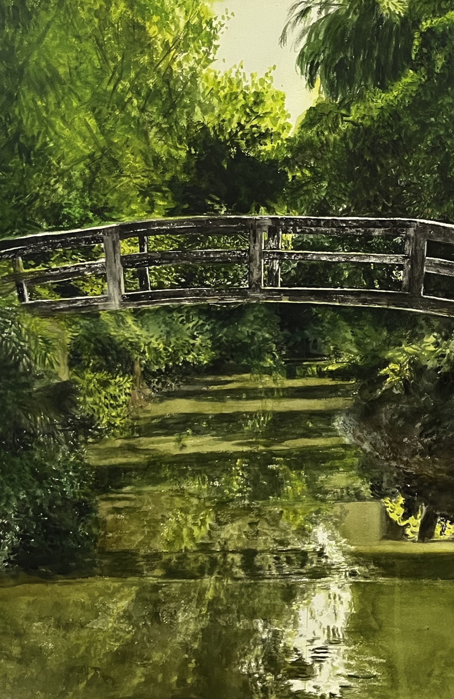

Little Bridge
小桥

- Artwork ID / 作品编号
- KW-W-000018
- Year / 年份
- 2022
- Medium / 媒介
- Watercolor on paper / 纸本水彩
- Dimensions / 尺寸
- 76 × 47 cm (H × W / 高 × 宽)
About the work / 作品介绍
Little Bridge was completed in 2022 following a painting trip to the hometown of the Chinese composer Xian Xinghai in Guangdong Province. A modest bridge stretches across a quiet stream, surrounded by flourishing trees whose reflections merge with shifting sunlight on the water.During this journey, I realized that poetry does not belong only to celebrated landmarks. It already exists within ordinary places and everyday life. Through the transparency and layered qualities of watercolor, the painting preserves a fleeting moment of natural light while celebrating the enduring beauty found in the familiar landscape.
《小桥》完成于2022年，创作素材来源于广东音乐家冼星海故乡的一次采风。溪流之上，一座普通的小桥静静横跨水面，两岸树木繁茂，阳光穿过枝叶洒落水中，桥身与树影共同映照出宁静而富有层次的自然景观。这次采风让我深刻感受到，诗意并不属于著名的风景，也无需刻意营造。即使在广东普通的乡野之间，同样存在着令人动容的自然之美。一座小桥、一湾溪水、一片树荫，共同构成了人与自然和谐共处的真实图景。作品通过水彩透明而丰富的层次，记录自然光影不断变化的瞬间，也表达我对日常生活中平凡之美的持续关注。